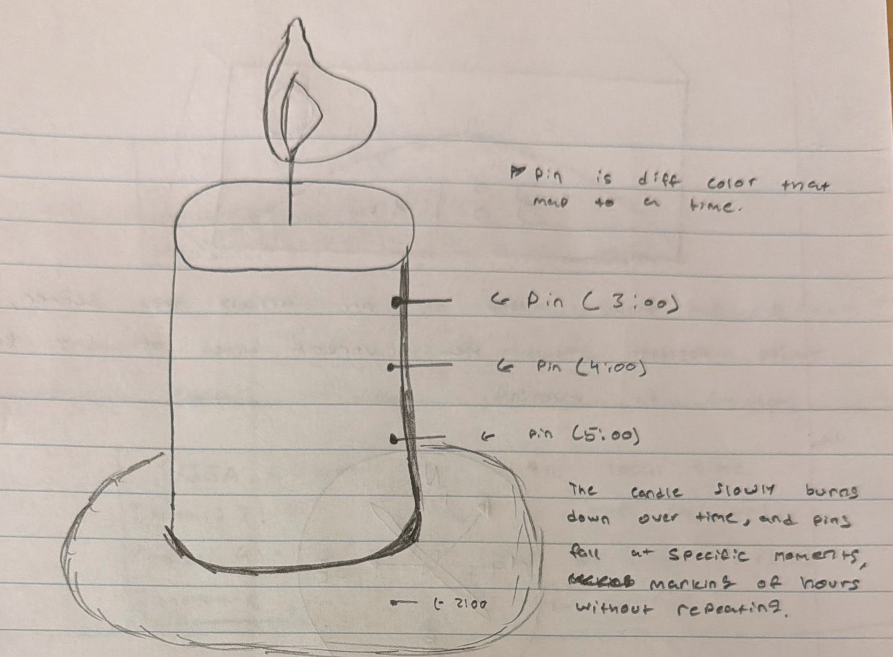
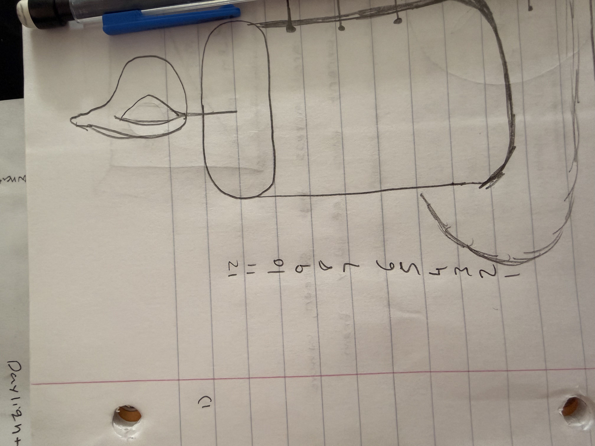
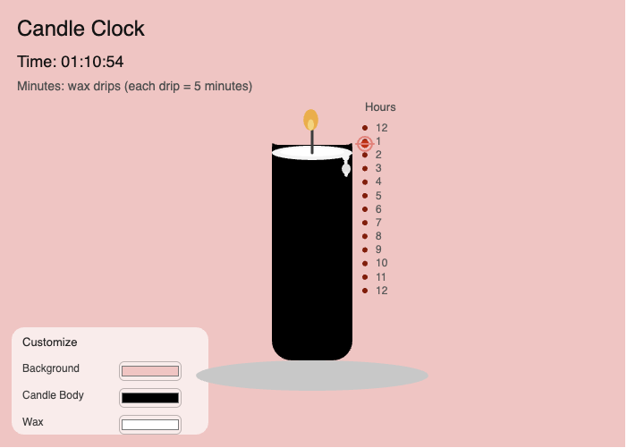
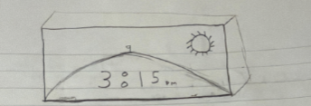
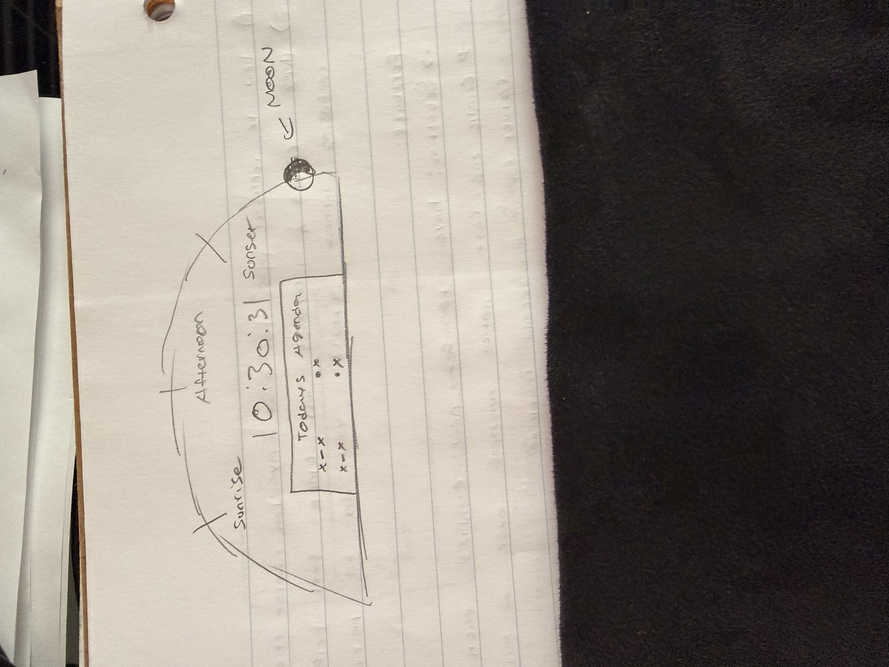
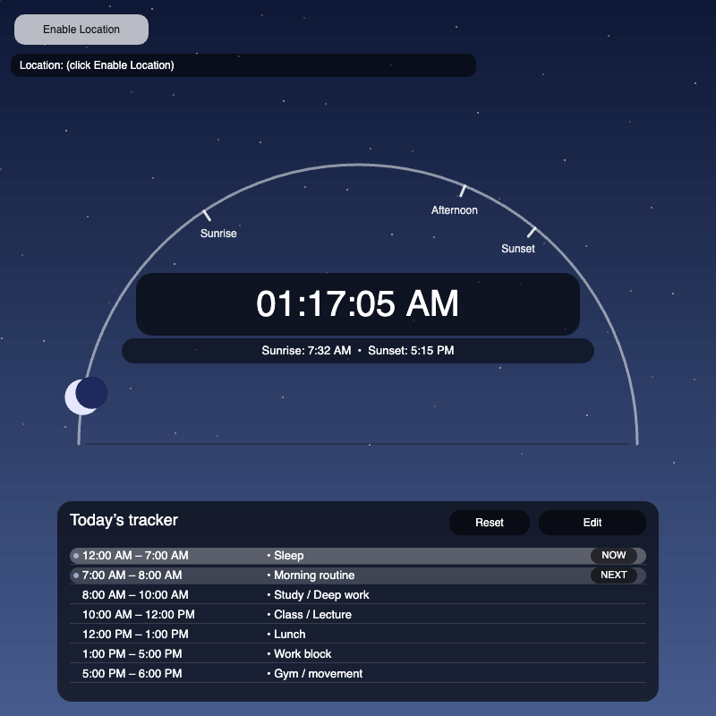
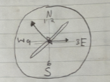
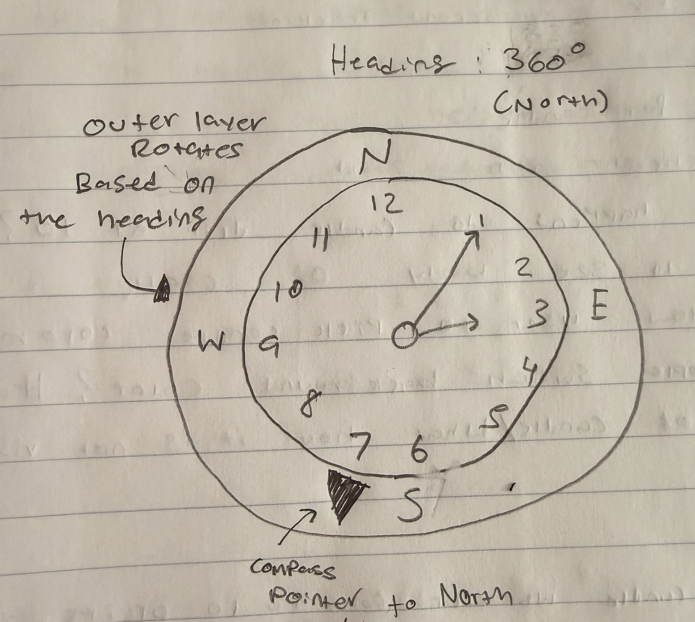
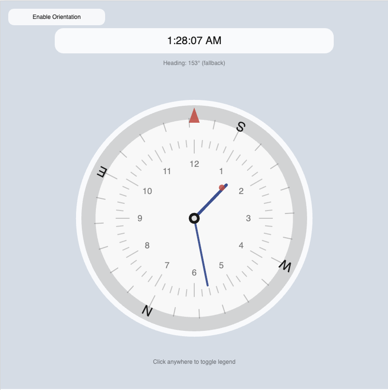

Sketch narrative
- Context: This clock is designed for focused productivity contexts like studying, deep work, or reading—situations where constantly checking a phone or digital clock can break concentration. Instead of demanding attention, the candle clock gives a calm, ambient sense of time passing that can sit quietly in the background.
- Design decisions: I chose a candle metaphor because it frames time as something that slowly depletes rather than something that ticks aggressively forward. This matches how focused work often feels steady, continuous, and immersive. Hours are encoded by the candle’s burn height, which is read against a reusable vertical scale placed beside the candle. After feedback, I made sure the candle height aligns precisely with this ruler so the hour reading feels grounded and accurate. Minutes are represented by wax drips, with each drip corresponding to five minutes, offering a coarse sense of progress without encouraging constant checking. Seconds are shown through a subtle flame sway that completes one gentle cycle per second, adding life and motion without becoming distracting. The neutral color palette and minimal layout were intentional to reduce visual noise and support sustained attention.
- Future work: This clock could be extended with light interaction, such as clicking the candle to start a timed focus session or adjusting the burn rate to match Pomodoro-style intervals. Another extension would be adding multiple candles to represent parallel tasks or longer-term goals across a day.
- Evaluation In the earlier version, the “pins falling” idea looked cool but wasn’t reusable and made the time harder to read accurately. Switching to the side ruler made the hour reading way more grounded, and aligning the candle height to the ruler fixed the biggest clarity issue. The wax drips are intentionally not super precise (5-minute chunks), which fits the focus context because it gives progress without making you obsess over every minute.
Sketch evolution



Day Arc / Routine Tracker Clock : Sketch narrative
This clock is designed for people who structure their day around routines rather than exact minutes, such as students, remote workers, or anyone trying to maintain a healthy daily rhythm. It works well as a “check-in” clock that shows where you are in the day without feeling urgent.
- Design decisions: Instead of a traditional circular clock, I represented the day as an arc that moves from sunrise to sunset, framing time as a journey rather than a cycle. The current time is displayed prominently in the center for clarity, but the surrounding arc provides contextual information about morning, afternoon, and night. Sunrise and sunset times are shown to ground the visualization in the real world, making time feel situational rather than abstract. The routine tracker below reinforces this idea by mapping time blocks to activities like sleep, work, or exercise, helping users see how their day flows rather than just what time it is.
- Future work: A future version could allow users to edit routines directly on the arc or visualize deviations from their planned schedule. Another extension could show weekly patterns to compare how consistently routines are followed over time
- Evaluation The arc works best as a “where am I in my day?” check-in, not a precision clock, so it feels less stressful than a normal clock face. Adding sunrise/sunset markers helped a lot because otherwise the arc felt kind of abstract. The routine tracker improves usability because you can connect the time to what you should be doing, but I tried to keep it simple so it doesn’t turn into a full calendar.
Sketch evolution



Compass Clock : Sketch narrative
This clock is designed for navigation-oriented or exploratory contexts such as hiking, traveling, or even outdoor mindfulness, where orientation and time awareness are equally important. It’s meant for moments when knowing “where you are” matters as much as “when you are.”
- Design decisions: I merged a compass with an analog clock to challenge the assumption that time must always be read independently of space. The rotating compass ring encodes device orientation, while the hour and minute hands represent current time independently of heading. A fixed red triangle marks the direction you are facing, providing a stable reference point even as the compass rotates. Seconds are shown using a pulsing dot, which introduces motion without adding another rotating hand. This layered encoding allows users to read both time and direction at a glance while reinforcing the idea that time and movement are often experienced together. Was made to be a watch so hikers can use it.
- Future work: This clock could be extended by integrating GPS data to show location-based time changes or by shifting the color palette based on direction or time of day. Another extension could adapt the design for wearable devices used during outdoor activities.
- Evaluation The hardest part was visual hierarchy as at first it felt like too many lines competing, so it wasn’t obvious what was “time” vs “direction.” Separating it into layers (fixed direction indicator + rotating compass ring + stable clock hands) made it readable while still feeling unique. The pulsing seconds dot keeps the clock feeling alive without adding another spinning hand that would clutter the face.
Sketch evolution



Adapted from Golan Levin, 2016-2018
HWK 5: Narrative Visualization — Design Note
- Dataset: NFL Fantasy Football Statistics (2025) for RB/WR/TE, including usage (touches + targets) and total fantasy points.
- Story: More usage helps, but it does not guarantee fantasy success—efficiency still matters.
- Author-driven vs user-driven: This is author-driven because the layout, highlights, and annotation guide the viewer to a specific takeaway; the only interaction is optional hover for details.
- Genre: Annotated scatterplot (editorial / explanatory).
- Feedback incorporated: Added a legend for what each dot represents, added a trend line for context, and highlighted outliers to make the “efficiency matters” point clearer.